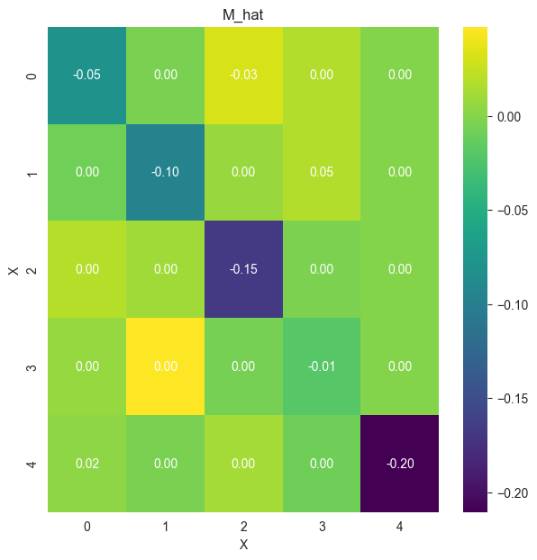
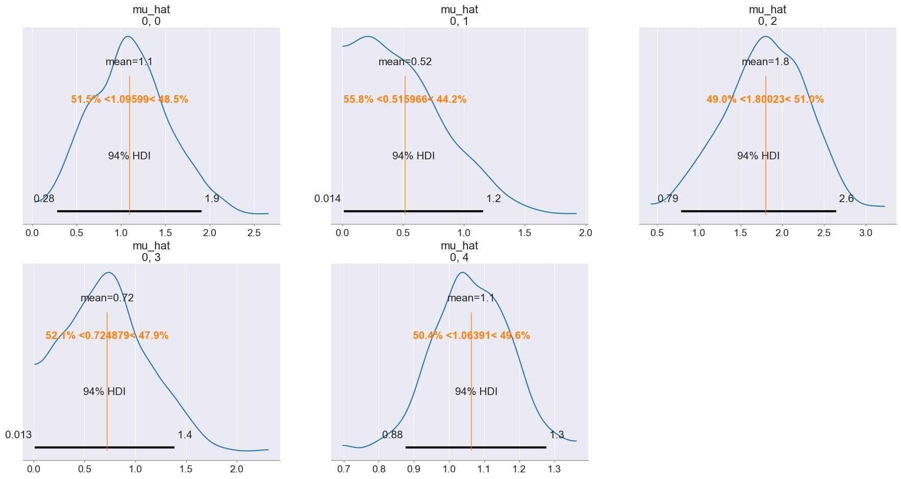
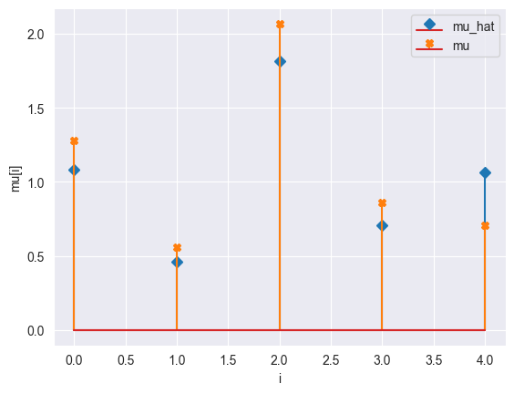

[1]:
from mimic.utilities import *
from mimic.model_infer.infer_gLV_bayes import *
from mimic.model_infer import *
from mimic.model_simulate import *
from mimic.model_simulate.sim_gLV import *
import pandas as pd
import numpy as np
import seaborn as sns
import matplotlib.pyplot as plt
WARNING (pytensor.tensor.blas): Using NumPy C-API based implementation for BLAS functions.
Used Bayesian inference to infer the parameters of a (linearised) gLV model¶
The generalized Lotka-Volterra equation takes the form
\[\frac{dX_i}{dt} = \mu_i X_i + X_i M_{ij} X_j + X_i \epsilon_{il} u_l\]
where: - \(X_i\) is the concentration of a species - \(\mu_i\) is its specific growth rate - \(M_{ij}\) is the effect of the interaction of species \(i\) on species \(j\) - \(\epsilon_{il}\) is the susceptibility to the time-dependent perturbation \(u_l\)
Five species, single time course¶
[2]:
# Generate simulated 5 species data and plot it
# Return growth rate matrix (mu), interaction matrix (M), times and simulated results with Gaussian noise incorporated (yobs)
sim_gLV_class = sim_gLV()
yobs, times, mu, M = generate_5_species_data(sim_gLV_class)
(5,)
Model parameters:
Model: gLV
num_species: 5
mu: [1.28 0.56 2.07 0.86 0.7 ]
M: [[-0.05 0. -0.03 0. 0. ]
[ 0. -0.1 0. 0.05 0. ]
[ 0. 0. -0.15 0. 0. ]
[ 0. 0. 0. -0.01 0. ]
[ 0.02 0. 0. 0. -0.2 ]]
epsilon: []
Using the following parameters for gLV simulation: {'num_species': 5, 'mu': array([1.27853844, 0.55683415, 2.06752757, 0.86387608, 0.70448068]), 'M': array([[-0.05 , 0. , -0.025, 0. , 0. ],
[ 0. , -0.1 , 0. , 0.05 , 0. ],
[ 0. , 0. , -0.15 , 0. , 0. ],
[ 0. , 0. , 0. , -0.01 , 0. ],
[ 0.02 , 0. , 0. , 0. , -0.2 ]]), 'epsilon': array([], shape=(5, 0), dtype=float64)}
Bayesian inference (no shrinkage)¶
First we will do Bayesian inference without any shrinkage priors
[3]:
import arviz as az
import matplotlib.pyplot as plt
import numpy as np
import pymc as pm
import pytensor.tensor as at
import pickle
import cloudpickle
[5]:
X, F = linearize_time_course_16S(yobs, times)
print(X.shape)
print(F.shape)
print(F[:10,:])
(49, 6)
(49, 5)
[[ 0.52895036 0.08536993 0.68020563 0.56929112 -0.80133732]
[ 0.36152371 0.04655615 0.38556959 1.05386249 -0.96717332]
[ 0.41594142 0.03248581 0.37166766 0.67425061 -0.3271869 ]
[ 0.37814123 0.29460925 0.14918686 0.67619656 -0.59925564]
[ 0.37527599 0.1640331 0.50946111 0.80951352 -0.50752239]
[ 0.36122979 0.2060925 0.11214721 0.69562975 -0.18823973]
[ 0.32668768 0.19299652 0.21482467 0.52364284 -0.66624361]
[ 0.21463664 0.3216537 0.15238115 0.85808323 -0.30829425]
[ 0.388769 0.19969247 0.01714542 0.63129112 -0.3851611 ]
[ 0.17175939 0.48660706 0.20994262 0.69867514 0.11979933]]
---------------------------------------------------------------------------
AttributeError Traceback (most recent call last)
Cell In[5], line 6
3 print(F.shape)
5 print(F[:10,:])
----> 6 print(F.type)
AttributeError: 'numpy.ndarray' object has no attribute 'type'
[5]:
# Set priors
mu_prior = [1.28, 0.56, 2.07, 0.86, 0.7]
M_prior = 0.1
[6]:
# Perform Bayesian inference
inference = infergLVbayes(X, F, mu_prior, M_prior)
idata = inference.run_bayes_gLV()
X shape: (49, 6)
F shape: (49, 5)
Number of species: 5
Manually determined mu prior
Manually determined M prior
Auto-assigning NUTS sampler...
Initializing NUTS using jitter+adapt_diag...
Multiprocess sampling (2 chains in 2 jobs)
NUTS: [sigma, mu_hat, M_ii_hat_p, M_ij_hat]
Sampling 2 chains for 500 tune and 500 draw iterations (1_000 + 1_000 draws total) took 28 seconds.
We recommend running at least 4 chains for robust computation of convergence diagnostics


[7]:
# Print summary
summary = az.summary(idata, var_names=["mu_hat", "M_ii_hat", "M_ij_hat", "M_hat", "sigma"])
print(summary[["mean", "sd", "r_hat"]])
# Save posterior samples to file
az.to_netcdf(idata, 'model_posterior.nc')
/Users/chaniaclare/anaconda3/bin/python3.12/lib/python3.12/site-packages/arviz/stats/diagnostics.py:592: RuntimeWarning: invalid value encountered in scalar divide
(between_chain_variance / within_chain_variance + num_samples - 1) / (num_samples)
/Users/chaniaclare/anaconda3/bin/python3.12/lib/python3.12/site-packages/arviz/stats/diagnostics.py:592: RuntimeWarning: invalid value encountered in scalar divide
(between_chain_variance / within_chain_variance + num_samples - 1) / (num_samples)
/Users/chaniaclare/anaconda3/bin/python3.12/lib/python3.12/site-packages/arviz/stats/diagnostics.py:592: RuntimeWarning: invalid value encountered in scalar divide
(between_chain_variance / within_chain_variance + num_samples - 1) / (num_samples)
/Users/chaniaclare/anaconda3/bin/python3.12/lib/python3.12/site-packages/arviz/stats/diagnostics.py:592: RuntimeWarning: invalid value encountered in scalar divide
(between_chain_variance / within_chain_variance + num_samples - 1) / (num_samples)
mean sd r_hat
mu_hat[0, 0] 1.075 0.449 1.00
mu_hat[0, 1] 0.505 0.356 1.00
mu_hat[0, 2] 1.812 0.459 1.00
mu_hat[0, 3] 0.718 0.412 1.00
mu_hat[0, 4] 1.107 0.109 1.00
M_ii_hat[0] -0.079 0.060 1.00
M_ii_hat[1] -0.082 0.061 1.00
M_ii_hat[2] -0.081 0.059 1.00
M_ii_hat[3] -0.081 0.063 1.00
M_ii_hat[4] -0.209 0.018 1.00
M_ij_hat[0, 0] -0.075 0.059 1.00
M_ij_hat[0, 1] -0.008 0.057 1.00
M_ij_hat[0, 2] 0.034 0.061 1.01
M_ij_hat[0, 3] 0.020 0.058 1.01
M_ij_hat[1, 0] -0.006 0.038 1.00
M_ij_hat[1, 1] -0.096 0.038 1.00
M_ij_hat[1, 2] 0.009 0.041 1.00
M_ij_hat[1, 3] 0.021 0.038 1.00
M_ij_hat[2, 0] 0.014 0.057 1.00
M_ij_hat[2, 1] 0.014 0.057 1.00
M_ij_hat[2, 2] -0.170 0.059 1.01
M_ij_hat[2, 3] -0.005 0.056 1.01
M_ij_hat[3, 0] 0.005 0.024 1.00
M_ij_hat[3, 1] 0.048 0.024 1.00
M_ij_hat[3, 2] -0.007 0.026 1.01
M_ij_hat[3, 3] -0.023 0.024 1.00
M_ij_hat[4, 0] 0.002 0.040 1.00
M_ij_hat[4, 1] -0.002 0.039 1.00
M_ij_hat[4, 2] 0.009 0.040 1.00
M_ij_hat[4, 3] -0.010 0.041 1.00
M_hat[0, 0] -0.075 0.059 1.00
M_hat[0, 1] -0.008 0.057 1.00
M_hat[0, 2] 0.034 0.061 1.01
M_hat[0, 3] 0.020 0.058 1.01
M_hat[0, 4] 0.000 0.000 NaN
M_hat[1, 0] -0.006 0.038 1.00
M_hat[1, 1] -0.096 0.038 1.00
M_hat[1, 2] 0.009 0.041 1.00
M_hat[1, 3] 0.021 0.038 1.00
M_hat[1, 4] 0.000 0.000 NaN
M_hat[2, 0] 0.014 0.057 1.00
M_hat[2, 1] 0.014 0.057 1.00
M_hat[2, 2] -0.170 0.059 1.01
M_hat[2, 3] -0.005 0.056 1.01
M_hat[2, 4] 0.000 0.000 NaN
M_hat[3, 0] 0.005 0.024 1.00
M_hat[3, 1] 0.048 0.024 1.00
M_hat[3, 2] -0.007 0.026 1.01
M_hat[3, 3] -0.023 0.024 1.00
M_hat[3, 4] 0.000 0.000 NaN
M_hat[4, 0] 0.002 0.040 1.00
M_hat[4, 1] -0.002 0.039 1.00
M_hat[4, 2] 0.009 0.040 1.00
M_hat[4, 3] -0.010 0.041 1.00
M_hat[4, 4] -0.209 0.018 1.00
sigma[0] 0.129 0.006 1.00
[7]:
'model_posterior.nc'
[8]:
init_species_start = 10
sim_gLV_class = sim_gLV()
param_data_compare(idata, F, mu, M, times, yobs, init_species_start, sim_gLV_class)
(2, 500, 5, 5)
(2, 500, 1, 5)
Using the following parameters for gLV simulation: {'num_species': 5, 'mu': array([1.09454975, 0.45207143, 1.80084652, 0.68075857, 1.10561 ]), 'M': array([[-0.07498013, -0.00772419, 0.03415458, 0.02243357, 0. ],
[-0.00458266, -0.09559499, 0.00797197, 0.02198532, 0. ],
[ 0.01379795, 0.01316074, -0.17251465, -0.0075252 , 0. ],
[ 0.00436309, 0.04750146, -0.00649601, -0.0234677 , 0. ],
[ 0.0045247 , -0.00250796, 0.00878197, -0.00970517, -0.20991499]]), 'epsilon': array([], shape=(5, 0), dtype=float64)}
mu_hat/mu:
[1.09454975 0.45207143 1.80084652 0.68075857 1.10561 ]
[1.27853844 0.55683415 2.06752757 0.86387608 0.70448068]
M_hat/M:
[[-0.07 -0.01 0.03 0.02 0. ]
[-0. -0.1 0.01 0.02 0. ]
[ 0.01 0.01 -0.17 -0.01 0. ]
[ 0. 0.05 -0.01 -0.02 0. ]
[ 0. -0. 0.01 -0.01 -0.21]]
[[-0.05 0. -0.025 0. 0. ]
[ 0. -0.1 0. 0.05 0. ]
[ 0. 0. -0.15 0. 0. ]
[ 0. 0. 0. -0.01 0. ]
[ 0.02 0. 0. 0. -0.2 ]]
Bayesian inference with shrinkage¶
Now we will do inference with the Horseshoe prior
[9]:
nX = num_species
n_obs = times.shape[0] - 1
noise_stddev = 0.1
# Params for shrinkage on M_ij (non diagonal elements)
DA = nX*nX - nX
DA0 = 3 # expected number of non zero entries in M_ij
N = n_obs - 2
[13]:
inference = infergLVbayes(X, F, mu_prior, M_prior, DA=DA, DA0=DA0, N=N, noise_stddev=noise_stddev)
idata = inference.run_bayes_gLV_shrinkage()
DA: 20, DA0: 3, N: 47, noise_stddev: 0.1
Manually determined mu prior
Manually determined M prior
Auto-assigning NUTS sampler...
Initializing NUTS using jitter+adapt_diag...
Multiprocess sampling (2 chains in 2 jobs)
NUTS: [sigma, mu_hat, M_ii_hat_p, c2, tau, lam, M_ij_hat]
Sampling 2 chains for 500 tune and 500 draw iterations (1_000 + 1_000 draws total) took 35 seconds.
We recommend running at least 4 chains for robust computation of convergence diagnostics
The rhat statistic is larger than 1.01 for some parameters. This indicates problems during sampling. See https://arxiv.org/abs/1903.08008 for details

[14]:
# print summary
summary = az.summary(idata, var_names=["mu_hat", "M_ii_hat", "M_ij_hat", "M_hat", "sigma"])
print(summary[["mean", "sd", "r_hat"]])
# Write posterior samples to file
az.to_netcdf(idata, 'model_posterior.nc')
mean sd r_hat
mu_hat[0, 0] 1.099 0.470 1.01
mu_hat[0, 1] 0.526 0.335 1.00
mu_hat[0, 2] 1.797 0.477 1.01
mu_hat[0, 3] 0.718 0.394 1.00
mu_hat[0, 4] 1.112 0.105 1.00
M_ii_hat[0] -0.080 0.060 1.00
M_ii_hat[1] -0.080 0.066 1.01
M_ii_hat[2] -0.081 0.062 1.00
M_ii_hat[3] -0.081 0.063 1.01
M_ii_hat[4] -0.210 0.018 1.00
M_ij_hat[0, 0] -0.080 0.061 1.00
M_ij_hat[0, 1] -0.006 0.059 1.01
M_ij_hat[0, 2] 0.029 0.062 1.01
M_ij_hat[0, 3] 0.017 0.060 1.00
M_ij_hat[1, 0] -0.009 0.039 1.00
M_ij_hat[1, 1] -0.096 0.040 1.01
M_ij_hat[1, 2] 0.007 0.040 1.00
M_ij_hat[1, 3] 0.019 0.039 1.00
M_ij_hat[2, 0] 0.016 0.057 1.00
M_ij_hat[2, 1] 0.011 0.056 1.00
M_ij_hat[2, 2] -0.167 0.059 1.01
M_ij_hat[2, 3] -0.004 0.059 1.00
M_ij_hat[3, 0] 0.007 0.025 1.00
M_ij_hat[3, 1] 0.048 0.025 1.01
M_ij_hat[3, 2] -0.005 0.026 1.00
M_ij_hat[3, 3] -0.021 0.025 1.00
M_ij_hat[4, 0] 0.003 0.039 1.00
M_ij_hat[4, 1] -0.004 0.039 1.01
M_ij_hat[4, 2] 0.013 0.040 1.00
M_ij_hat[4, 3] -0.007 0.041 1.00
M_hat[0, 0] -0.080 0.061 1.00
M_hat[0, 1] -0.006 0.059 1.01
M_hat[0, 2] 0.029 0.062 1.01
M_hat[0, 3] 0.017 0.060 1.00
M_hat[0, 4] 0.000 0.000 NaN
M_hat[1, 0] -0.009 0.039 1.00
M_hat[1, 1] -0.096 0.040 1.01
M_hat[1, 2] 0.007 0.040 1.00
M_hat[1, 3] 0.019 0.039 1.00
M_hat[1, 4] 0.000 0.000 NaN
M_hat[2, 0] 0.016 0.057 1.00
M_hat[2, 1] 0.011 0.056 1.00
M_hat[2, 2] -0.167 0.059 1.01
M_hat[2, 3] -0.004 0.059 1.00
M_hat[2, 4] 0.000 0.000 NaN
M_hat[3, 0] 0.007 0.025 1.00
M_hat[3, 1] 0.048 0.025 1.01
M_hat[3, 2] -0.005 0.026 1.00
M_hat[3, 3] -0.021 0.025 1.00
M_hat[3, 4] 0.000 0.000 NaN
M_hat[4, 0] 0.003 0.039 1.00
M_hat[4, 1] -0.004 0.039 1.01
M_hat[4, 2] 0.013 0.040 1.00
M_hat[4, 3] -0.007 0.041 1.00
M_hat[4, 4] -0.210 0.018 1.00
sigma[0] 0.129 0.006 1.00
/Users/chaniaclare/anaconda3/bin/python3.12/lib/python3.12/site-packages/arviz/stats/diagnostics.py:592: RuntimeWarning: invalid value encountered in scalar divide
(between_chain_variance / within_chain_variance + num_samples - 1) / (num_samples)
/Users/chaniaclare/anaconda3/bin/python3.12/lib/python3.12/site-packages/arviz/stats/diagnostics.py:592: RuntimeWarning: invalid value encountered in scalar divide
(between_chain_variance / within_chain_variance + num_samples - 1) / (num_samples)
/Users/chaniaclare/anaconda3/bin/python3.12/lib/python3.12/site-packages/arviz/stats/diagnostics.py:592: RuntimeWarning: invalid value encountered in scalar divide
(between_chain_variance / within_chain_variance + num_samples - 1) / (num_samples)
/Users/chaniaclare/anaconda3/bin/python3.12/lib/python3.12/site-packages/arviz/stats/diagnostics.py:592: RuntimeWarning: invalid value encountered in scalar divide
(between_chain_variance / within_chain_variance + num_samples - 1) / (num_samples)
[14]:
'model_posterior.nc'
[15]:
init_species_start = 10
sim_gLV_class = sim_gLV()
param_data_compare(idata, F, mu, M, times, yobs, init_species_start, sim_gLV_class)
(2, 500, 5, 5)
(2, 500, 1, 5)
Using the following parameters for gLV simulation: {'num_species': 5, 'mu': array([1.07982536, 0.48807203, 1.78778429, 0.67447827, 1.11527908]), 'M': array([[-0.07966285, -0.00485871, 0.03154357, 0.01761132, 0. ],
[-0.00821454, -0.09563645, 0.00785829, 0.01716423, 0. ],
[ 0.01820988, 0.01080597, -0.16725931, -0.00342584, 0. ],
[ 0.00663116, 0.04737735, -0.00622332, -0.02072542, 0. ],
[ 0.0038124 , -0.00441776, 0.01305378, -0.00909275, -0.210475 ]]), 'epsilon': array([], shape=(5, 0), dtype=float64)}
mu_hat/mu:
[1.07982536 0.48807203 1.78778429 0.67447827 1.11527908]
[1.27853844 0.55683415 2.06752757 0.86387608 0.70448068]
M_hat/M:
[[-0.08 -0. 0.03 0.02 0. ]
[-0.01 -0.1 0.01 0.02 0. ]
[ 0.02 0.01 -0.17 -0. 0. ]
[ 0.01 0.05 -0.01 -0.02 0. ]
[ 0. -0. 0.01 -0.01 -0.21]]
[[-0.05 0. -0.025 0. 0. ]
[ 0. -0.1 0. 0.05 0. ]
[ 0. 0. -0.15 0. 0. ]
[ 0. 0. 0. -0.01 0. ]
[ 0.02 0. 0. 0. -0.2 ]]



Bayesian inference with shrinkage and a perturbation with unknown interactions¶
Now we will do inference with the Horseshoe prior for shrinkage but now we include a perturbation (assuming unknown interaction terms). This gives more identifiability
[6]:
# use all previous definitions of mu, M etc
# construct perturbation matrix
num_perturbations = 1
epsilon = np.zeros([num_species, num_perturbations])
epsilon[:, 0] = [1, -1, 1, -1, 1]
def pert_fn(t):
if 2.0 <= t < 2.2 or 3.0 <= t < 3.2 or 4.0 <= t < 4.2:
return np.array([1])
else:
return np.array([0])
# relinearise
u = np.array([pert_fn(t)[0] for t in times])
u = u.astype(int)
print('perturbation:\n', u)
X, F = linearize_time_course_16S_u(yobs, times, u)
# instantiate simulator
simulator = sim_gLV(num_species=num_species,
num_perturbations=num_perturbations,
M=M,
mu=mu,
epsilon=epsilon)
simulator.print_parameters()
yobs, init_species, mu, M, _ = simulator.simulate(times=times, init_species=init_species, u=pert_fn)
# add some gaussian noise
yobs = yobs + np.random.normal(loc=0, scale=0.1, size=yobs.shape)
# plot simulation
plot_gLV(yobs, times)
perturbation:
[0 0 0 0 0 0 0 0 0 0 0 0 0 0 0 0 0 0 0 0 1 1 0 0 0 0 0 0 0 0 1 1 0 0 0 0 0
0 0 0 1 1 0 0 0 0 0 0 0 0]
Model parameters:
Model: gLV
num_species: 5
mu: [1.28 0.56 2.07 0.86 0.7 ]
M: [[-0.05 0. -0.03 0. 0. ]
[ 0. -0.1 0. 0.05 0. ]
[ 0. 0. -0.15 0. 0. ]
[ 0. 0. 0. -0.01 0. ]
[ 0.02 0. 0. 0. -0.2 ]]
epsilon: [[ 1.]
[-1.]
[ 1.]
[-1.]
[ 1.]]
Using the following parameters for gLV simulation: {'num_species': 5, 'mu': array([1.27853844, 0.55683415, 2.06752757, 0.86387608, 0.70448068]), 'M': array([[-0.05 , 0. , -0.025, 0. , 0. ],
[ 0. , -0.1 , 0. , 0.05 , 0. ],
[ 0. , 0. , -0.15 , 0. , 0. ],
[ 0. , 0. , 0. , -0.01 , 0. ],
[ 0.02 , 0. , 0. , 0. , -0.2 ]]), 'epsilon': array([[ 1.],
[-1.],
[ 1.],
[-1.],
[ 1.]])}

[7]:
nX = num_species
n_obs = times.shape[0] - 1
noise_stddev = 0.1
# Params for shrinkage on M_ij (non diagonal elements)
DA = nX*nX - nX
DA0 = 3 # expected number of non zero entries in M_ij
N = n_obs - 2
[8]:
inference = infergLVbayes(X, F, mu_prior, M_prior, DA=DA, DA0=DA0, N=N, noise_stddev=noise_stddev, epsilon=epsilon)
idata = inference.run_bayes_gLV_shrinkage_pert()
DA: 20, DA0: 3, N: 47, noise_stddev: 0.1
Manually determined mu prior
Manually determined M prior
Auto-assigning NUTS sampler...
Initializing NUTS using jitter+adapt_diag...
Multiprocess sampling (2 chains in 2 jobs)
NUTS: [sigma, epsilon_hat, mu_hat, M_ii_hat_p, c2, tau, lam, M_ij_hat]
Sampling 2 chains for 500 tune and 500 draw iterations (1_000 + 1_000 draws total) took 35 seconds.
We recommend running at least 4 chains for robust computation of convergence diagnostics
The rhat statistic is larger than 1.01 for some parameters. This indicates problems during sampling. See https://arxiv.org/abs/1903.08008 for details



[9]:
# print summary
summary = az.summary(idata, var_names=["mu_hat", "M_ii_hat", "M_ij_hat", "M_hat", "epsilon_hat", "sigma"])
print(summary[["mean", "sd", "r_hat"]])
# Write posterior samples to file
az.to_netcdf(idata, 'model_posterior.nc')
/Users/chaniaclare/anaconda3/bin/python3.12/lib/python3.12/site-packages/arviz/stats/diagnostics.py:592: RuntimeWarning: invalid value encountered in scalar divide
(between_chain_variance / within_chain_variance + num_samples - 1) / (num_samples)
/Users/chaniaclare/anaconda3/bin/python3.12/lib/python3.12/site-packages/arviz/stats/diagnostics.py:592: RuntimeWarning: invalid value encountered in scalar divide
(between_chain_variance / within_chain_variance + num_samples - 1) / (num_samples)
/Users/chaniaclare/anaconda3/bin/python3.12/lib/python3.12/site-packages/arviz/stats/diagnostics.py:592: RuntimeWarning: invalid value encountered in scalar divide
(between_chain_variance / within_chain_variance + num_samples - 1) / (num_samples)
/Users/chaniaclare/anaconda3/bin/python3.12/lib/python3.12/site-packages/arviz/stats/diagnostics.py:592: RuntimeWarning: invalid value encountered in scalar divide
(between_chain_variance / within_chain_variance + num_samples - 1) / (num_samples)
mean sd r_hat
mu_hat[0, 0] 1.096 0.442 1.00
mu_hat[0, 1] 0.516 0.353 1.00
mu_hat[0, 2] 1.800 0.505 1.00
mu_hat[0, 3] 0.725 0.394 1.01
mu_hat[0, 4] 1.064 0.108 1.00
... ... ... ...
epsilon_hat[0, 1] 0.027 0.057 1.00
epsilon_hat[0, 2] -0.026 0.061 1.00
epsilon_hat[0, 3] 0.001 0.060 1.00
epsilon_hat[0, 4] 0.087 0.057 1.00
sigma[0] 0.130 0.006 1.00
[61 rows x 3 columns]
[9]:
'model_posterior.nc'
[10]:
init_species_start = 10
sim_gLV_class = sim_gLV()
param_data_compare_pert(idata, F, mu, M, epsilon, num_perturbations, times, yobs, init_species_start, sim_gLV_class)
(2, 500, 5, 5)
(2, 500, 1, 5)
Using the following parameters for gLV simulation: {'num_species': 5, 'mu': array([1.27853844, 0.55683415, 2.06752757, 0.86387608, 0.70448068]), 'M': array([[-0.05 , 0. , -0.025, 0. , 0. ],
[ 0. , -0.1 , 0. , 0.05 , 0. ],
[ 0. , 0. , -0.15 , 0. , 0. ],
[ 0. , 0. , 0. , -0.01 , 0. ],
[ 0.02 , 0. , 0. , 0. , -0.2 ]]), 'epsilon': array([[ 1.],
[-1.],
[ 1.],
[-1.],
[ 1.]])}
Using the following parameters for gLV simulation: {'num_species': 5, 'mu': array([1.08151548, 0.46163856, 1.81472578, 0.70501383, 1.06332694]), 'M': array([[-0.07777412, -0.00863481, 0.03099275, 0.01602534, 0. ],
[-0.00703635, -0.09605751, 0.00553823, 0.01494071, 0. ],
[ 0.0154909 , 0.01312306, -0.17027681, -0.00200915, 0. ],
[ 0.0056457 , 0.04722504, -0.00484164, -0.01967444, 0. ],
[ 0.00276166, -0.00328078, 0.01104304, -0.00621421, -0.2039765 ]]), 'epsilon': array([[ 0.01437353],
[ 0.0292251 ],
[-0.02538588],
[ 0.00131117],
[ 0.08660974]])}
mu_hat/mu:
[1.08151548 0.46163856 1.81472578 0.70501383 1.06332694]
[1.27853844 0.55683415 2.06752757 0.86387608 0.70448068]
M_hat/M:
[[-0.08 -0.01 0.03 0.02 0. ]
[-0.01 -0.1 0.01 0.01 0. ]
[ 0.02 0.01 -0.17 -0. 0. ]
[ 0.01 0.05 -0. -0.02 0. ]
[ 0. -0. 0.01 -0.01 -0.2 ]]
[[-0.05 0. -0.025 0. 0. ]
[ 0. -0.1 0. 0.05 0. ]
[ 0. 0. -0.15 0. 0. ]
[ 0. 0. 0. -0.01 0. ]
[ 0.02 0. 0. 0. -0.2 ]]
e_hat/e:
[[ 0.01]
[ 0.03]
[-0.03]
[ 0. ]
[ 0.09]]
[[ 1.]
[-1.]
[ 1.]
[-1.]
[ 1.]]


